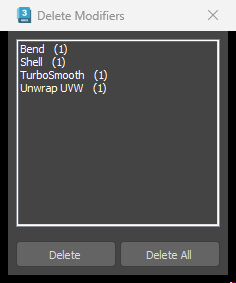

Tools / Delete Modifiers
Delete Modifiers
List every modifier on your selection and delete the ones you pick from all objects at once.
What it does
A small window lists every modifier found on the selected objects, with the number of objects that carry it, for example Bend (1). Deleting an entry removes every modifier of that name from every selected object.

How to use it
- Select the objects.
- Open Delete Modifiers (9000 Toolkit category).
- Pick one or more lines in the list and press Delete, or double-click a line to delete just that one.
- Delete All removes every modifier in the list.
Options
| Control | What it does |
|---|---|
| Delete | Deletes the picked modifiers from all selected objects. |
| Delete All | Deletes every listed modifier. |
| Double-click a line | Deletes just that modifier. |
Good to know
- The window stays open and refreshes itself when you change the selection or the stack.
- Modifiers are matched by name, so two different modifiers you renamed the same count as one.
- Each deletion is one undo step.